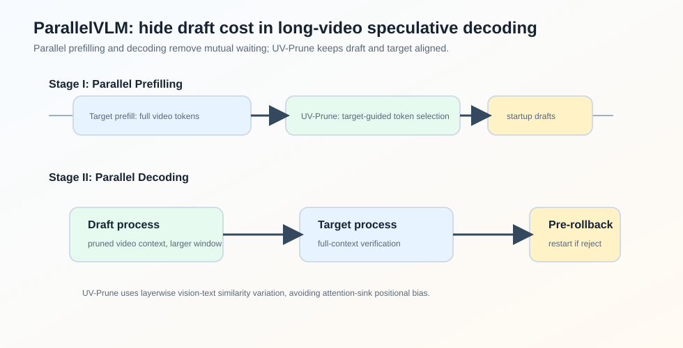
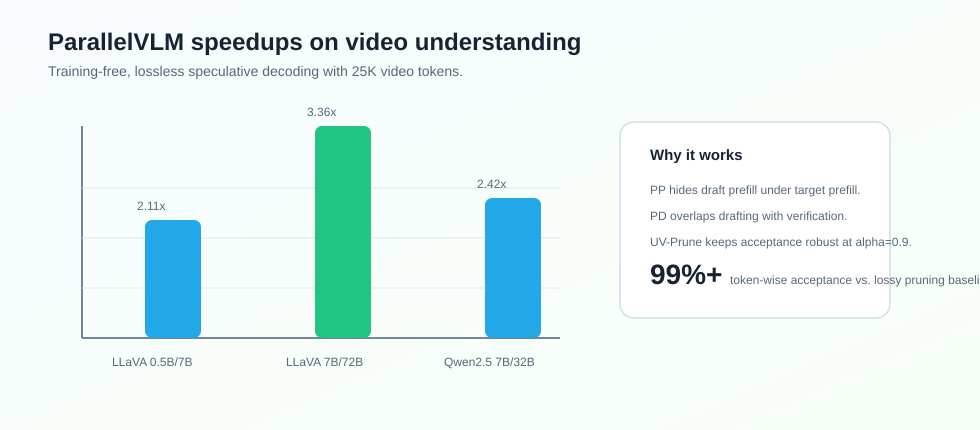

ParallelVLM
Abstract
论文 ParallelVLM: Lossless Video-LLM Acceleration with Visual Alignment Aware Parallel Speculative Decoding 研究的是 Video-LLM 的无损推理加速。
Video-LLM 的特殊问题是 video tokens 很长，prefill 和 decoding 都很重。直接做 visual token pruning 虽然能加速，但会改变 target model 的输入分布，带来信息损失。Speculative decoding 是 lossless 的，但传统 SD 在 Video-LLM 上有两个瓶颈：draft 和 target 的 prefill/decoding 串行等待，以及 pruned draft context 和 full target context 的对齐问题。
ParallelVLM 的核心思路是：把 draft 和 target 的 prefill、decoding 都做成 pipeline parallel，同时用 target model 早层的 vision-text alignment variation 指导 draft-side video token pruning。

论文报告 ParallelVLM 在 LLaVA-OneVision-72B 上平均达到 加速，在 Qwen2.5-VL-32B 上达到 加速，并保持 lossless speculative verification。
Motivation
Video-LLM 的输入通常是大量 video tokens 加少量 text tokens。以 LLaVA-OneVision 为例，论文实验中 128 帧视频会产生：
个 video tokens。
这让两个阶段都很重：
- prefill：target model 需要为完整 video context 建 KV cache；
- decoding：每步仍要在长 context 上 autoregressive decoding。
传统 speculative decoding 在 Video-LLM 上有两个问题。
Sequential Execution Bottleneck
vanilla SD 中 draft prefill、target prefill、draft decoding、target verification 都按顺序发生。对于长视频，draft prefill 本身已经很重。
论文举例：24K video tokens 下，LLaVA-OV-72B target prefill 约 44.23s，7B draft prefill 约 7.92s。这个 draft prefill 在传统流程中就是额外等待。
decoding 阶段也类似。若 draft decoding time ，target verification time ，窗口 ，一轮约为：
硬件在 draft 和 verify 的交替中出现大量 idle time。
Speed Ratio vs. Alignment
video tokens 有冗余，所以可以 pruning draft model 的 visual tokens，提高：
但 pruning 太激进会损害 draft-target alignment，导致 acceptance rate 下降。
SpecVLM 用 target attention score 指导 pruning，但论文指出 attention-guided pruning 有 positional bias：attention 容易集中在视频开头、结尾或靠近 query 的位置，而不一定是对任务真正重要的中间帧。
Method
UV-Prune
ParallelVLM 不问“模型 attention 到哪些 token”，而问：
哪些 video tokens 在 target model 的层间传播中越来越对 text query 对齐？
对于第 个 video token 和第 个 text token ，定义 vision-text similarity：
然后计算 early layers 间的 similarity variation：
如果 大，说明这个 video token 在 target model 层间变得更相关。UV-Prune 保留 Top-K：
这个信号来自 target model 自己，因此比纯 attention score 更像一种 verifier-guided alignment transfer，同时避免 attention-sink positional bias。
Parallel Prefilling
ParallelVLM 的 Stage I 同时启动两个进程：
target process 对完整 video tokens prefill，draft process 在 pruned video tokens 上 prefill。由于 target prefill 很长，draft-side pruning、draft prefill、startup token generation 都可以隐藏在 target prefill 时间里。
Stage I 结束时：
- target model 有 full-context KV cache；
- draft model 有 pruned-context KV cache；
- 第一批 startup draft tokens 已经准备好，可以马上 verify。
Parallel Decoding
Stage II 中，draft 和 target 形成流水线。第 轮里：
- draft model 生成下一窗口候选 tokens；
- target model 同时验证上一窗口候选 tokens。
如果 token 被拒绝，则执行 pre-rollback 和 restart drafting。
窗口大小由 pruned speed ratio 决定：
论文例子中，LLaVA-OV-7B/72B 不 pruning 时 ， pruning 后 ，所以窗口可以从 5 扩到 9。
Experiments
论文在五个 video understanding benchmark 上评估：
- VideoDetailCaption
- VideoMME
- MVBench
- MVLU
- LongVideoBench
模型组合覆盖 LLaVA-OneVision 和 Qwen2.5-VL。

lossless SD 对比中，ParallelVLM 的平均 speedup：
| Model Pair | ParallelVLM Avg. Speedup | SpecVLM Avg. Speedup |
|---|---|---|
| LLaVA-OV 0.5B / 7B | ||
| LLaVA-OV 7B / 72B | ||
| Qwen2.5-VL 7B / 32B | ||
| LLaVA-OV 7B / 7B | ||
| Qwen2.5-VL 7B / 7B |
相比 lossy visual token pruning，ParallelVLM 的优势是 target model 仍然用 full context verification。论文中 FastV、SparseVLM、P-Drop、DyCoke 在 10% retention 下平均 token-wise acceptance/quality proxy 约 82%-91%，而 ParallelVLM 在 LLaVA-OV-72B 和 Qwen2.5-VL-32B 上分别约 99.1% 和 98.7%。
Ablation
论文重点分析 pruning ratio 。随着 增大，draft decoding 更快，speed ratio 提高：
| Model Pair | Target | Draft , | Draft , |
|---|---|---|---|
| LLaVA-OV 7B/72B | 420 ms | 78.3 ms, | 46.6 ms, |
| Qwen2.5-VL 7B/32B | 203 ms | 63.7 ms, | 39.8 ms, |
但 不能无限增大。极端 pruning 会破坏 draft-target alignment，acceptance rate 下滑。论文认为 是较好的 trade-off。
Takeaway
ParallelVLM 的贡献不是单一算法，而是一个 Video-LLM speculative decoding 的系统协同设计：
- 用 Parallel Prefilling 隐藏 draft prefill；
- 用 Parallel Decoding 消除 draft/verify mutual waiting；
- 用 UV-Prune 提高 draft speed ratio，同时尽量保持 alignment。
我觉得它最值得借鉴的是：Video-LLM 的 speculative decoding 不能只照搬 text LLM 的流程。video context 太长，prefill 和 pruning 必须一起进入系统设计。
Limitation
论文方法依赖 draft/target 双进程调度、目标模型早层 representation 传递和 pruning pipeline，实现复杂度高于普通 SD。并且虽然 verification 是 lossless 的，draft-side pruning 的选择仍会影响 acceptance 和实际 speedup，需要针对不同 Video-LLM 和视频长度调参。
 wechat
wechat alipay
alipay